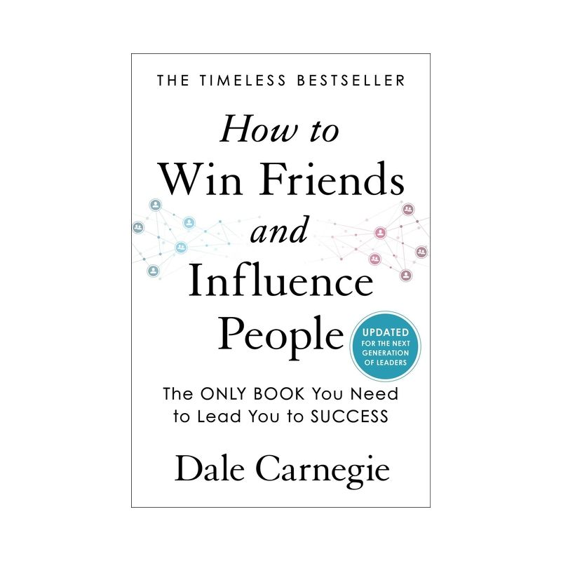

Library › Psychology & People
How to Win Friends & Influence People — Summary & Key Lessons

The original people-skills bible: 30 timeless principles for making people like you, winning them over, and leading without friction.
📖 OPEN THE FULL INTERACTIVE BREAKDOWN →🌐 Read it in Hindi, Hinglish, Gujarati, Tamil & 22 more languages — free, with audio.
💡 The Big Idea
Published in 1936 and still the people-skills bible, Carnegie's insight is deceptively simple: people are creatures of emotion, not logic — driven by a craving to feel important. Stop criticizing, start appreciating honestly, and see every situation through the other person's eyes. Influence isn't manipulation; it's arousing in others an eager want, and making people feel genuinely valued.
🧠 The 8 Key Lessons
Lesson 1: Never Criticize, Condemn, or Complain
Part 1, Principle 1
Criticism is futile: it puts people on the defensive, wounds their pride, and breeds resentment — it doesn't change behavior. Even criminals justify themselves ('Two Gun' Crowley, cop-killer, called himself a man with 'a weary heart that would do nobody harm'). If murderers don't blame themselves, the people you criticize certainly won't. Any fool can criticize — and most fools do. Understanding, not condemnation, is the mark of character.
📖 Example: Abraham Lincoln, once a vicious public mocker of rivals (one nearly dueled him over it), learned his lesson and never publicly criticized again. During the Civil War, when General Meade let Lee escape after Gettysburg, Lincoln wrote a furious letter — and… Read the full example →
⚡ Do this: Write the angry message — then delete it. For one week, catch yourself before every criticism and ask: 'Will this actually change anything, or just create an enemy?'
Lesson 2: Give Honest, Sincere Appreciation
Part 1, Principles 2–3
The deepest craving in human nature is the desire to feel important — deeper than hunger for most. Flattery is counterfeit (selfish, insincere, easily detected); appreciation is genuine and specific. Charles Schwab, paid a then-astronomical $1M+ a year by Andrew Carnegie, credited his salary to one ability: being 'hearty in approbation and lavish in praise.' And the only way to get anyone to do anything? Make them WANT to do it — talk in terms of what THEY want.
📖 Example: Carnegie's fishing metaphor: he personally loves strawberries and cream, but fish want worms — so when fishing, he baits the hook with worms, not strawberries. Most people spend their lives offering strawberries to fish, then wonder why nobody bites. Read the full example →
⚡ Do this: Every day this week, give one specific, true compliment ('the way you handled that angry client call was masterful') to someone who won't expect it.
Lesson 3: Six Ways to Make People Like You
Part 2, Principles 1–6
1) Become genuinely interested in other people. 2) Smile — it costs nothing and says 'I'm glad to see you.' 3) Remember names — a person's name is the sweetest sound in any language. 4) Be a good listener; encourage others to talk about themselves. 5) Talk in terms of the other person's interests. 6) Make the other person feel important — sincerely. The common thread: shift the spotlight from yourself onto them.
📖 Example: The dog is Carnegie's model: it makes a living purely by giving love — no ulterior motive, ecstatic to see you. And politically, Franklin Roosevelt would stay up the night before meeting someone studying their pet subject, because he knew the royal road to a… Read the full example →
⚡ Do this: At your next event, set a rule: ask 5 questions before making 1 statement about yourself. Use the person's name twice in the conversation.
Lesson 4: You Can't Win an Argument
Part 3, Principles 1–3
Nine times out of ten, arguments end with each side more convinced they're right. Even if you 'win,' you've made the other person feel inferior — you've hurt their pride, and 'a man convinced against his will is of the same opinion still.' Avoid arguments entirely. Never say 'you're wrong.' And when YOU are wrong, admit it quickly and emphatically — it disarms opponents and turns judges into defenders.
📖 Example: Carnegie corrected a dinner-party storyteller who misattributed a quote to the Bible (it was Shakespeare). His friend Gammond, a Shakespeare expert, kicked him under the table and sided with the storyteller. Later: 'Why rob a man of his face in front of… Read the full example →
⚡ Do this: Next disagreement, try: 'I may be wrong — I frequently am. Let's look at the facts together.' Watch the temperature drop instantly.
Lesson 5: Start Friendly, Get to 'Yes,' Let Them Talk
Part 3, Principles 4–7
A drop of honey catches more flies than a gallon of gall — begin friendly, even (especially) when you're furious. Use the Socratic method: start with questions the other person must answer 'yes' to; each yes builds momentum, while an early 'no' entrenches pride. Then let them do most of the talking — and let them feel the idea is theirs. People believe ideas they discover far more than ideas they're handed.
📖 Example: Rockefeller's aide, after a strike-related massacre at their Colorado mines, faced workers who wanted him hanged. He opened with warmth: visiting their homes, meeting their families, calling them friends — and won over men who weeks earlier were his sworn… Read the full example →
⚡ Do this: Before a tough conversation, script your first two 'yes-able' questions. In the meeting, target talking only 30% of the time.
Lesson 6: See Their Side, Honor Their Feelings
Part 3, Principles 8–12
Try honestly to see things from the other person's point of view — there's a reason they think and act as they do; find it and you have the key to their actions. Be sympathetic to their ideas and desires ('I don't blame you one iota for feeling as you do — in your shoes I'd feel the same'). Appeal to their nobler motives (people want to see themselves as honest and fair). Dramatize your ideas — showmanship works. And when nothing else lands, throw down a challenge: the desire to excel is the ultimate motivator.
📖 Example: Charles Schwab had a mill crew underperforming. Instead of threats, he chalked the day shift's output — '6' — on the floor. The night shift saw it, beat it, and wrote '7.' The day shift, stung, hit '10.' No lectures, no bonuses — just a challenge. The… Read the full example →
⚡ Do this: Before persuading anyone, write one paragraph FROM THEIR PERSPECTIVE: what do they want, fear, and believe? Open the conversation from there.
Lesson 7: Lead Without Offending: The 9 Leader's Tools
Part 4, Principles 1–9
Changing people without resentment: 1) Begin with honest praise. 2) Call attention to mistakes indirectly (and beware 'but' — use 'and': 'Your grades are up, AND if you keep going, math will rise too'). 3) Admit your own errors first. 4) Ask questions instead of giving orders. 5) Let the other person save face — always. 6) Praise every improvement, however slight. 7) Give a fine reputation to live up to. 8) Make faults seem easy to correct. 9) Make people happy to do what you suggest.
📖 Example: Charles Schwab found workers smoking under a 'No Smoking' sign. Instead of pointing at it ('Can't you read?'), he handed each man a cigar and said, 'I'll appreciate it, boys, if you'll smoke these outside.' They knew that he knew — rule enforced, dignity… Read the full example →
⚡ Do this: Convert your next three orders into questions: 'Might this work?' 'What do you think of...?' And catch someone doing something right — praise it specifically.
Lesson 8: The Fine Reputation: Give People a Name to Live Up To
Part 4, Principle 7 — Deep Dive
The most elegant tool in Carnegie's kit deserves its own study: if you want to improve a person in a certain respect, act as though that trait were ALREADY one of their outstanding characteristics. Tell the careless worker he's known for thoroughness, the difficult customer that she's famously fair, the unruly child that he's the kind of boy who helps — and watch behavior bend toward the assigned reputation rather than against a criticism. The mechanism is identity protection: people will go to extraordinary lengths to avoid disappointing a good opinion sincerely held of them, while they'll fight forever against a bad one (which only gives them a reputation to live DOWN to). This is the opposite of flattery: flattery praises what isn't there for the flatterer's gain; the fine reputation names a genuine seed and waters it publicly. Every label you attach to a person — 'lazy,' 'brilliant,' 'unreliable,' 'a natural' — is quietly a set of instructions they will tend to follow. Choose your labels like the self-fulfilling prophecies they are.
📖 Example: Carnegie's dentist story: Mrs. Hopkins, a dreaded chronic complainer among nurses, was greeted by a new supervisor with 'I hear you're one of the finest assistants this office has had' — and became exactly that within weeks; the reputation arrived before the… Read the full example →
⚡ Do this: Pick one person you've privately labeled negatively (colleague, family member, yourself). For two weeks, replace the label with the trait you WANT — spoken aloud, sincerely, at every genuine opportunity ('you're always so reliable with this'). Watch them grow into the name. Then audit the labels you've been giving yourself.
✅ 5-Step Action Plan
- Go 7 days with zero criticism, condemnation, or complaint. Track slips.
- Give one specific, honest compliment daily.
- Learn and USE names — repeat each new name twice in conversation.
- In every conversation: their interests first, 5 questions before 1 statement.
- Replace your next order with a question, and your next 'but' with 'and'.
💬 Best Quotes from How to Win Friends & Influence People
- “Talk to someone about themselves and they'll listen for hours.”
- “A person's name is to that person the sweetest sound in any language.”
- “You can't win an argument. If you lose it, you lose it; and if you win it, you lose it.”
Interactive version: mark lessons as read, listen in your language, share quote cards.